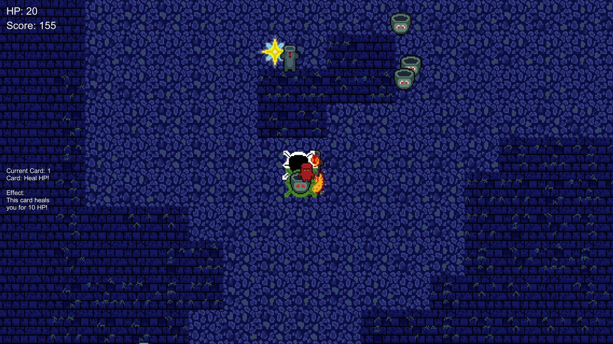

Portfolio
Annihilation Intelligence
Leap Engine
Ludum Dare 38 - A Small World - Lick's Cavern

I took part in a 72 hour Ludum Dare Games Jam, featuring the theme: A Small World. With only 72 hours, me and and my friend Rozen who I met during my time at univeristy
came up with and created this game using Unity, with both of us only doing most of one tutorial prior. We used this Ludum Dare as a chance to try out using Unity and C#
for games development. All parts of the game, including art and music, were created by us during the 72 hours.
For this project I worked on several areas. Assets wise, I created most of the assets used in this project, including a simple theme made using FL Studio
, and most of the sprites and tiles used in the project. These sprites were fairly basic and made quickly due to the time restriction, being created in Microsoft Paint, and using
GIMP as well for creating them, and for adding transparency.
On the programming side, I focused on the Player and the Enemies, and the Cards System -although this was added fairly late and it could not reach its potential-. For the player,
this included basic movement, and the Hook/Lick ability: Using the player's tongue to attack enemies, and to use as a grappling hook to traverse the map, as well as attack enemies
by grappling past them. The Cards System was an addition I made near the end of the project. I had originally planned them as power-ups the player could collect, such as cards to
increase the player's speed or damage, and as consumable power-ups to recover health or gain abilities briefly.
Overall, it was a great experience to take part in a games jam, which are always hectic and fun, but also it was a great chance to try out Unity and C#, which was barely
touched upon in university.
You can view our page on the Ludum Dare website here: https://ldjam.com/events/ludum-dare/38/$20821
You can view the repository for this project here (hosted on Rozen's Github Repository): https://github.com/rzsavilla/LD38_ASmallWorld
This Website
The website was created by me making use of Github Pages to host both the repository and the actualy website. This was created using Visual Studio in HTML and CSS,
using a base TypeScript template to allow the usage of TypeScript or JavaScript for this site in the future.
You can view the repository for this website here: https://github.com/Zoa84/Zoa84.github.io